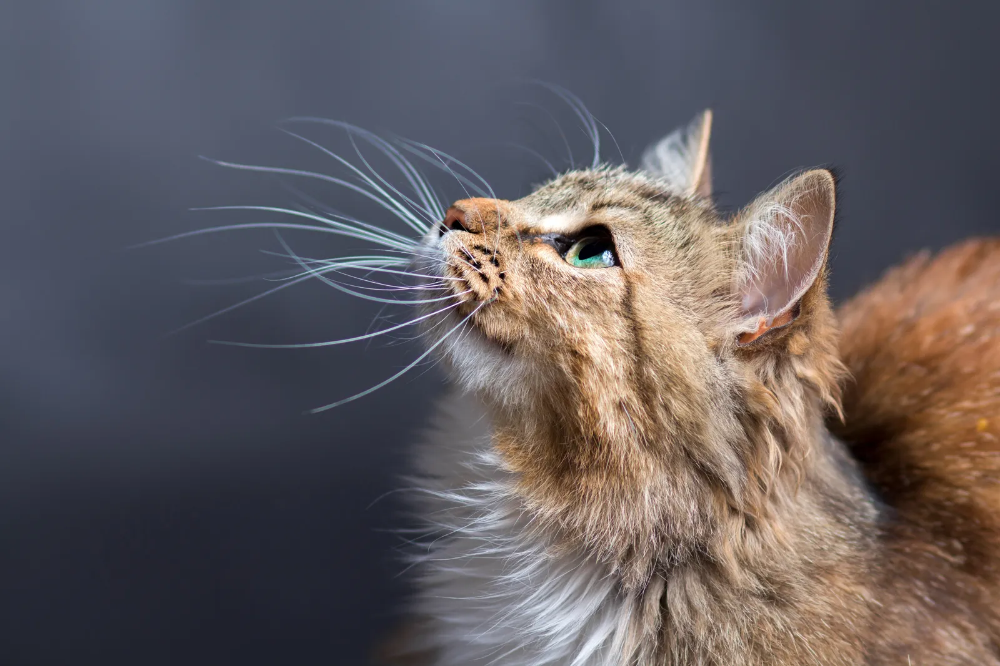

Fevralın 22-də Yaponiyada “Pişiklər günü” qeyd olunur. 1987-ci ildən qeyd olunan gün Yaponiyada hər il keçirilir və heyvanların öyrənilməsini təblig edir. Yaponların qənaətinə görə, pişiklər miyoldayarkən çıxardıqları səs ikinci ayın 22-si anlamında işlənir.
